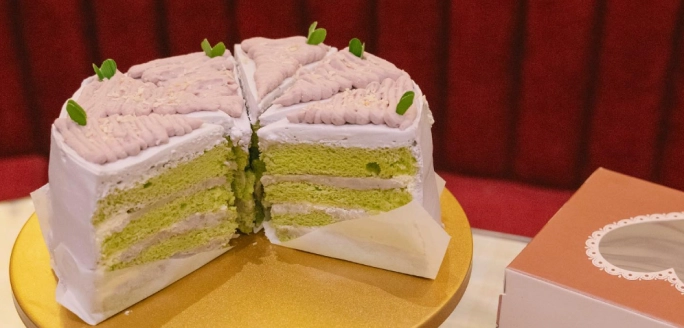

Back to Recipe Book

斑斓芋泥蛋糕 (Pandan Chiffon Cake)
材料
斑斓蛋糕
- 斑斓汁 65g
- 鸡蛋 4颗
- 白砂糖 35g
- 植物油 72g
- 牛奶 32g
- 低筋面粉 120g
- 泡打粉 2g
- 白砂糖 73g
芋泥
奶酪馅
- 奶油奶酪 150g
- 糖 20g
- 奶粉 10g
- 牛奶 25g
芋泥馅
制作步骤
- 新鲜斑斓叶 65g + 90g 水 放搅拌机里搅拌。好了冷藏备用
- 把蛋黄和蛋白分离。蛋黄里倒入白砂糖，植物油，牛奶，过筛的斑斓汁。筛如低筋面粉和泡打粉，然后搅拌均匀
- 到蛋白的部分：白砂糖分三次加入，打发成小弯钩
- 取一部分的蛋白拌匀。倒入剩下的蛋白霜拌匀
- 倒入模具，（提前预热烤箱）160C 35分钟
- 烤着的同时来蒸芋头和紫薯
- 蛋糕烤好取出 倒扣起来 以防它扁下去。5分钟后再倒扣回来
- 冷却好的紫薯芋头用搅拌机打成泥。盖上保鲜膜冷藏备用
- 淡奶油打硬挺。加入糖，芋泥 搅拌均匀
- 奶油奶酪部分：加入糖奶粉牛奶 搅拌均匀。放在裱花袋里
- 蛋糕切成3片。一圈奶酪馅里面芋泥馅。中间的放打好的芋泥馅。再重复
- 最后冷藏几个小时才切开吃